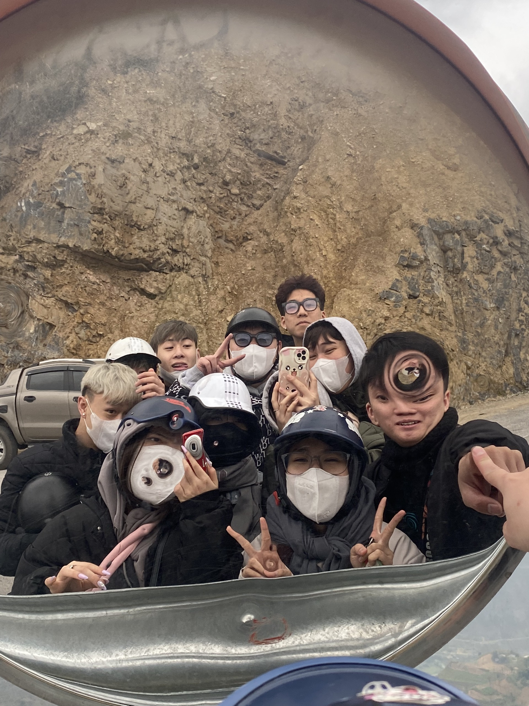
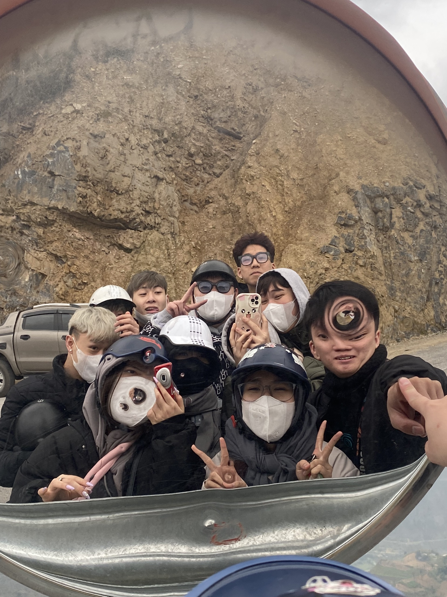
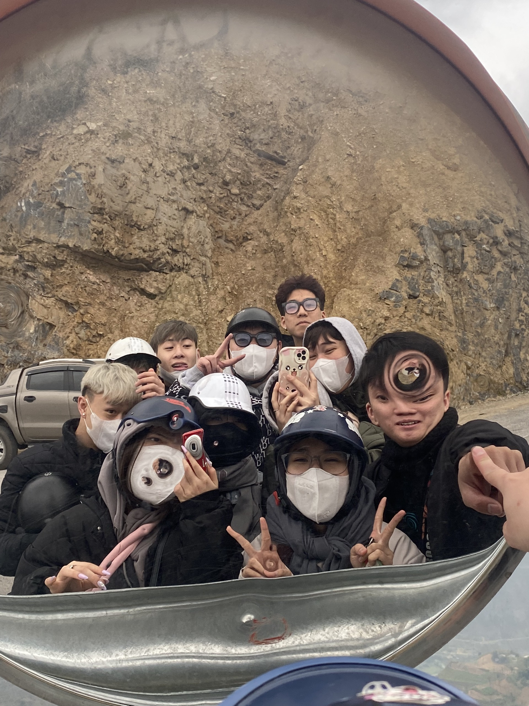
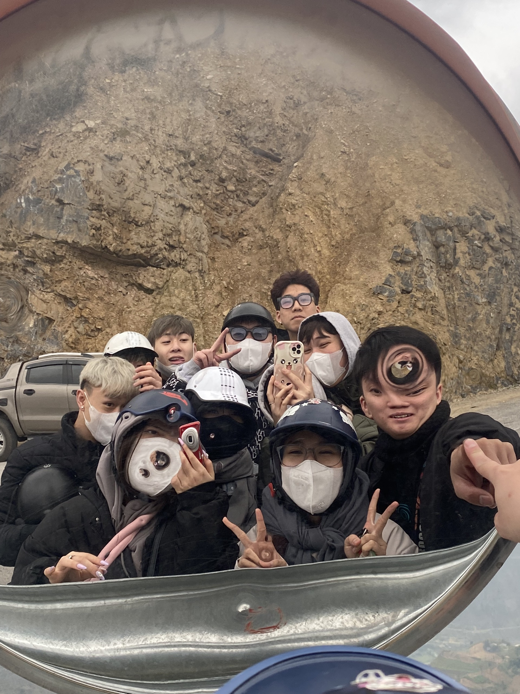

Huyện Mèo Vạc có vị trí địa lý: Phía đông và phía bắc giáp với Trung Quốc Phía tây giáp huyện Đồng Văn và huyện Yên Minh Phía nam giáp huyện Bảo Lâm, tỉnh Cao Bằng. Huyện Mèo Vạc có diện tích 574,18 km², dân số năm 2019 là 86.071 người[2], mật độ dân số đạt 150 người/km². Huyện Mèo Vạc cùng với các huyện Yên Minh, Đồng Văn, Vị Xuyên là bị thiệt hại nặng trong 2 cuộc chiến tranh biên giới giữa Việt Nam và Trung Quốc. Huyện cũng là điểm sáng trong tinh thần đoàn kết dân tộc khi nhân dân xã Sơn Vĩ (hơn một nửa là dân tộc thiểu số) không sơ tán mà ở lại để chiến đấu và tiếp tế lương thực cho bộ đội. Địa hình chủ yếu của huyện là núi đá vôi, có sông Nho Quế chảy qua. Đất nông nghiệp chiếm khoảng 12.100 ha. Sinh hoạt nông nghiệp là trồng trọt và khai thác các loại cây dược liệu, tam thất, hồ đào,... Ngành chăn nuôi có những gia súc bò, dê, ngựa. Có Quốc lộ 4C (con đường hạnh phúc).

Mã Pí Lèng là tên gọi theo tiếng Quan Hỏa chỉ “sống mũi con ngựa” theo nghĩa đen. Nhưng theo nghĩa bóng tên gọi này chỉ sự hiểm trở bậc nhất của đỉnh núi, nơi những con ngựa cái leo lên đến đỉnh trụy thai mà chết, nơi dốc cao đến mức con ngựa đi qua phải tắt thở, hoặc đỉnh núi dựng đứng như sống mũi con ngựa.Tuy nhiên, theo một số người Hmong bản địa thì tên đúng của đèo là Máo Pì Lèng, nghĩa là “sống mũi con mèo”. Đỉnh Mã Pí Lèng thuộc ba xã Pải Lủng, Pả Vi và Xín Cái (Mèo Vạc, Hà Giang) trong cao nguyên đá Đồng Văn có độ cao khoảng 2000m so với mặt nước biển, được tạo nên bởi một loạt trầm tích gồm đá vôi, đá phiến ánh, đá vôi silic chứa các hóa thạch cách đây khoảng 426 triệu năm, bao gồm trong đó nhiều vết trượt và vết nứt do các hoạt động tạo núi gây ra. Cảnh quan khu vực này lởm chởm đá dựng, trong đó vực sâu sông Nho Quế như xẻ đôi một bên là đỉnh Mã Pí Lèng và một bên là Săm Pun (Sam Pun), nơi có cột mốc biên giới và cửa khẩu thông thương từ Xín Cái sang Điền Bồng, Trung Quốc. Các học giả Pháp, từ cả trăm năm trước, đã gọi đỉnh Mã Pí Lèng nói riêng và Công viên địa chất toàn cầu Cao nguyên đá Đồng Văn nói chung là một “Tượng đài Địa chất”. Đi trên đèo Mã Pí Lèng nhìn xuống vực sâu, con sông Nho Quế chỉ bé như một sợi chỉ mà muốn xuống đến mặt nước của sông phải mất hơn một ngày đường.
Vốn là một quán cafe, nhà nghỉ với tầm nhìn hướng thẳng xuống dòng sông Nho Quế. Tuy vậy, sau những ồn ào kéo dài hàng năm trời, nơi đây giờ chỉ còn là một điểm để ngắm cảnh (có thu phí), không được phép kinh doanh dịch vụ ngủ nghỉ nữa.
Là một trong những biểu tượng tươi xanh của Mèo Vạc Hà Giang, dòng sông Nho Quế nằm dưới chân đèo Mã Pí lèng quanh năm êm đềm chảy qua những vách đá, tạo thành một đường ranh giới màu xanh biếc giữa các con đèo ở đây.Con sông hiền hòa ấy trong lành nhất là vào những ngày đầu mùa hạ hoặc thu nhưng thời điểm lý tưởng nhất trong năm vẫn là những ngày tháng 11 khi mà dòng nước chuyển màu xanh như ngọc tưởng chừng như một “Tuyệt Tình Cốc” của miền Bắc vậy.
Nhắc đến những trải nghiệm thú vị ở thị trấn Mèo Vạc không thể bỏ qua chợ tình Khâu Vai. Đây là một trong những điểm nhấn độc đáo và chưa bao giờ ngừng hot luôn níu chân du khách mỗi khi có dịp ghé thăm mảnh đất này.Du lịch Hà Giang đâu chỉ có cao nguyên đá Đồng Văn hay cột cờ Lũng Cú, nơi đây còn có một thị trấn Mèo Vạc tuy nhỏ nhưng sở hữu vô vàn những điều thú vị níu chân du khách mỗi lần ghé thăm. Vậy còn chần chừ gì mà không set kèo cùng với hội bạn để khám phá mảnh đất đáng mến này.